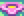
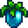

Stardew Valley is an open-ended country-life RPG! You’ve inherited your grandfather’s old farm plot in Stardew Valley. Armed with hand-me-down tools and a few coins, you set out to begin your new life. Can you learn to live off the land and turn these overgrown fields into a thriving home? It won’t be easy. Ever since Joja Corporation came to town, the old ways of life have all but disappeared. The community center, once the town’s most vibrant hub of activity, now lies in shambles. But the valley seems full of opportunity. With a little dedication, you might just be the one to restore Stardew Valley to greatness!
Spring is the season when players first begin the game. It's followed by Summer and preceded by Winter. In Spring, the grass is green. Trees regain their leaves, and pink petals blow through the air on windy days. There is also a variety of crops, forageable items, and fish which appear only during this season. Salmonberry season lasts between the 15th-18th of Spring. When Spring starts, new logs, rocks and grass patches will spawn on the farm, in Cindersap Forest, and Pelican Town.
Summer is the second season new players play through. It is followed by Fall and preceded by Spring. In Summer, grass remains green, although noticeably yellower than the spring grass was. Butterflies can be seen flying across the screen. Any Spring-only crops wilt and die on the 1st of Summer. New crops, fish, and forageable items are available. The Ice Cream Stand opens in summer.
Fall is the third season players play through. It is followed by Winter and preceded by Summer. Some of the most valuable crops can grow during Fall.
Winter is unique amongst the seasons in that no outdoors Crops apart from Winter Seeds and Fiber Seeds will grow, and all Grass, Weeds, and most tilled soil (including all fertilizer, even if the tile remains tilled) will all be removed at the start of the season. Bee Houses will also not produce honey during winter. Finally, standard trees, including those planted on the farm (except fruit trees) do not grow in winter unless Tree Fertilizer is applied.
| Crop | Season | Sell Price(Iridium Star) |
|---|---|---|
 Rhubarb Rhubarb |
Spring |  420g 420g |
 Strawberries (multiple harvests) Strawberries (multiple harvests) |
Spring | 240g |
 Melon Melon |
 Summer Summer |
500g |
 Starfruit Starfruit |
Summer |
1,500g |
 Red Cabbage Red Cabbage |
Summer |
520g |
 Fairy Rose Fairy Rose |
Fall | 580g |
 Pumpkin Pumpkin |
Fall | 640g |
| Ancient Fruit |  Winter Winter |
1,100g |